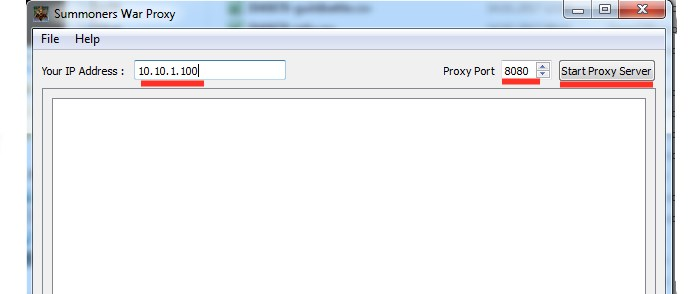

|
Mit Hilfe von SWProxy könnt ihr swarfarm und SWOP Optimizer benutzen, um bspw einen guten Überblick über eure Runen zu bekommen. Oder ihr könnt auch dabei mithelfen die GK-Ergebnisse an SWAG zu senden, wo sie zur Ansicht archiviert werden. ------------------------------------------ Downloadlink SWProxy für Windows mit plugins Das komplette Verzeichnis bspw auf den Desktop entpacken und SWProxy.exe starten. Oben rechts mit dem Button kann der Proxy-Server gestartet werden. Die angezeigte IP-Adresse und der Port müssen nun auf eurem Smartphone oder Tablet (iOS oder Android) eingetragen werden. Deaktiviert "mobile Daten" auf eurem Endgerät und überprüft ob ihr mit eurem heimischen WLAN-Netzwerk verbunden seid. ------------------------------------------ Android Bei Android erreicht ihr die Proxyeinstellungen, wenn ihr in den Einstellungen unter WLAN lange auf euer eigenes WLAN drückt und anschließend "Netzwerkeinstellungen verwalten" auswählt. Dort tragt ihr die IP, die euch SWProxy anzeigt unter "Proxy-Hostname" ein, und unter Port den entsprechenden Port. iOS Bei iOS erreicht ihr die Proxyeinstellungen, ebenfalls über "Einstellungen" - WLAN, dort wählt ihr euer eigenes WLAN aus und klickt auf das blaue "i" daneben. Im folgenden Menü kann ganz unten ein HTTP-Proxy eingetragen werden. Dazu auf "manuell" schalten. Server und Port entsprechend der Anzeige in SWProxy. ------------------------------------------ Wenn ihr nun SummonersWar neustartet legt SWProxy automatisch alle nötigen Log-Dateien ins SWProxy-Verzeichnis ab. Diese könnt ihr nun bei oben genannten Tools importieren. In folgendem Video könnt ihr euch die Funktionalität des Rune-Optimizers ansehen: |
{kind=link}